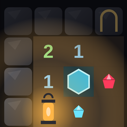

Lantern Deep: Cave Logic
A cave logic puzzle: read the numbers, brace the unstable rocks and light a path to the exit. Never a 50/50 guess.
Support
Found a bug or have an idea? Email cpdigicomm@gmail.com and include your iPhone model and iOS version.
How to play
Tap a rock to dig. A number counts the unstable rocks in the 8 spots around it. Long-press (or switch to Brace mode) to mark a rock unstable. Tap a number that already has all its braces to dig the rest around it.
Crystal clues (from the Crystal Vault on) count in a plus shape: up to 2 spots straight up, down, left and right.
The cave is done when open spots connect your lantern to the EXIT, stepping up, down or sideways. Then leave, or keep digging for gems.
FAQ
Will I ever have to guess?
No. Every cave is checked by a solver so logic can always find the next safe rock. If a Glimmer says to check your braces, one of your braces is on a safe rock.
Does it need internet?
No. Everything plays offline. Ads only load when you happen to be online.
How do I open the next cave?
Reach the exit of the cave before it.
The darkness makes it hard to see.
Turn on Reduce effects in Settings for an evenly lit board, and Bigger numbers for larger digits.
Will I lose progress if I delete the app?
Yes. Progress is stored only on your device.